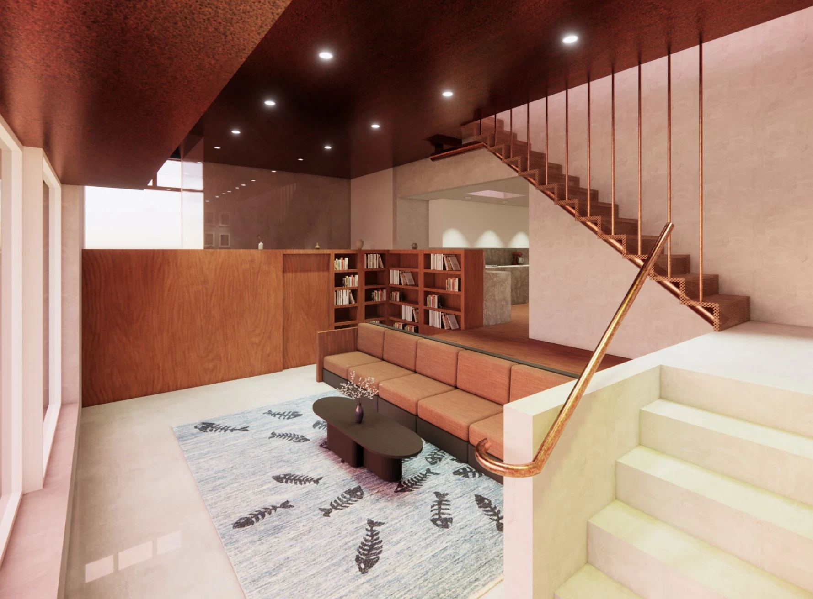
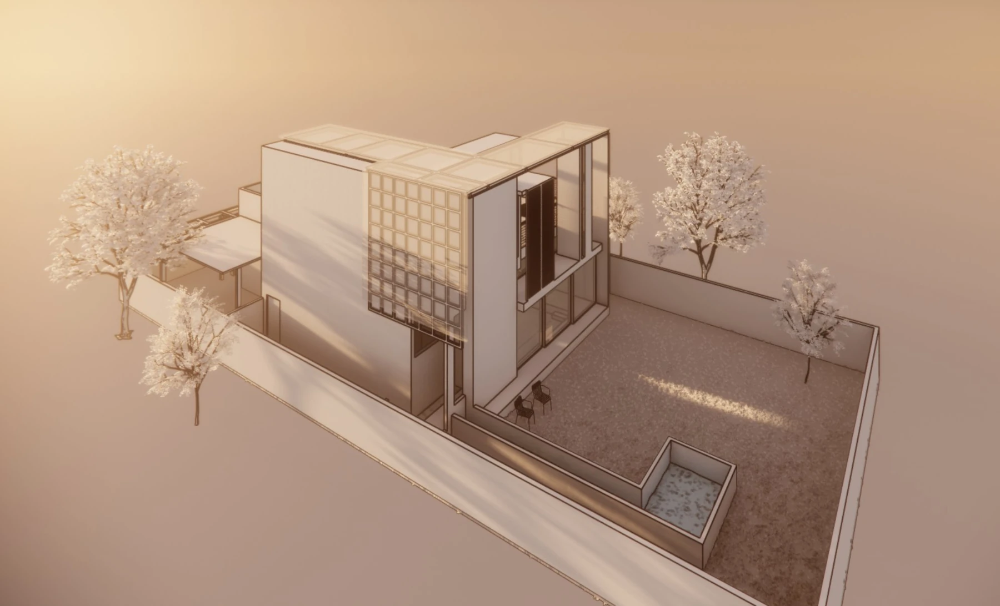
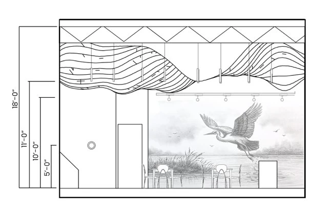
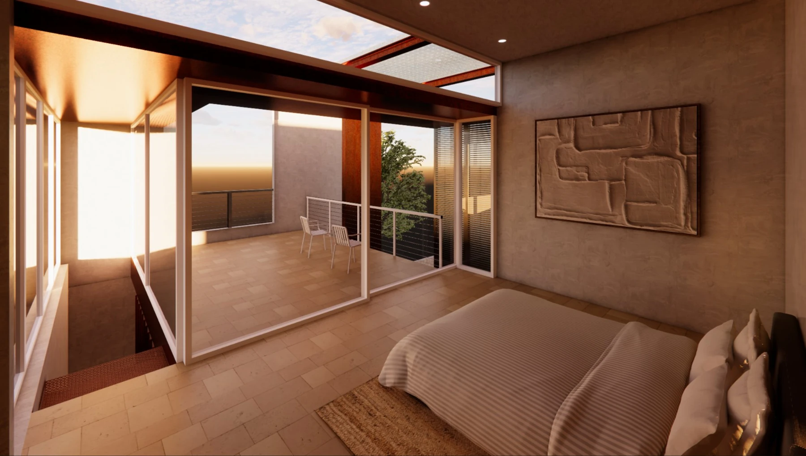
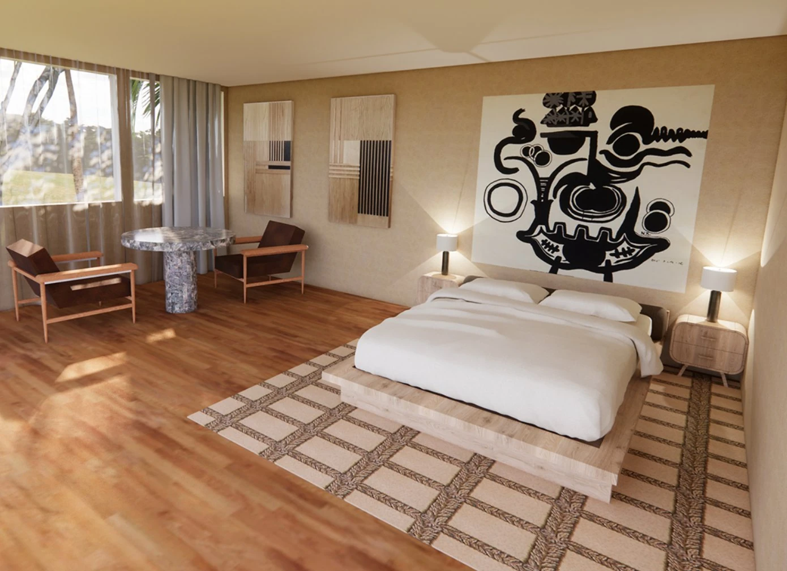
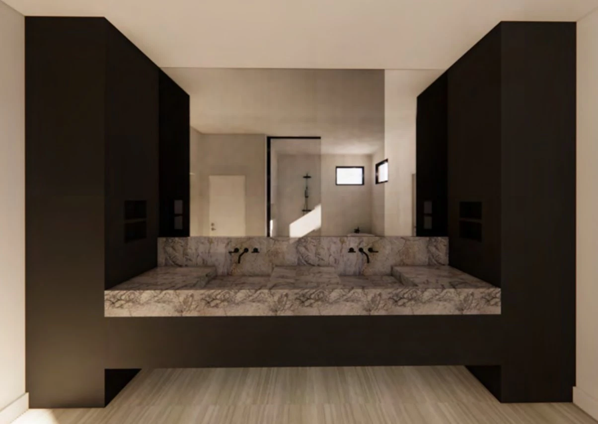

Interior design / Dallas & beyond
Crafting thoughtful spaces that inspire wonder and foster connection.
I partner with homeowners and businesses to create interiors that feel grounded, personal, and designed for the way people live, work, and gather.
Start a project
01 / Design philosophy
Every space tells
a different story.
Great design begins with curiosity, taking the time to understand your vision, values, and the way you want your space to feel and function.
I create environments that are thoughtfully crafted, timeless, and uniquely yours. Whether designing a home or a commercial space, I believe meaningful spaces foster connection, inspire a sense of wonder, and become more beautiful with time.
From my portfolio
Ideas, taking shape.
A collection of my spatial visualizations, material studies and architectural drawings.











Heather King ChingayaInterior designer
02 / About me
A love of people.
A lifelong love
of design.
I’ve loved design for as long as I can remember. As a kid, I was always rearranging furniture and repainting my room, noticing how small changes could completely transform the feeling of a space.
That same curiosity about how people experience the world led me to earn a degree in social work, where I developed a deep appreciation for people’s stories, relationships, and what helps them thrive. Over time, I realized our surroundings are part of those stories, too.
I returned to school to study Interior Architecture and Design through UCLA Extension, bringing together my love of people and my lifelong passion for design.
Today, I create spaces that feel warm, grounded, and deeply personal, balancing natural materials, refined design, and thoughtful details with a quiet sense of wonder. I believe good design supports wellbeing, brings people together, and should always reflect the people who call a space their own.
03 / Working together
A little curiosity.
A shared vision.
Design should feel inspiring, not overwhelming. I’ll guide you through each step, making the process collaborative, thoughtful, and enjoyable from our first conversation to the final reveal.
01Listen
Every project begins with curiosity. I take the time to understand how you live, work, gather, and what you hope your space will become.
02Imagine
I’ll explore ideas, materials, colors, and inspiration with you to create a vision that feels uniquely yours.
03Refine
From floor plans to finishes, every decision is made with intention, balancing beauty, function, and longevity.
04Create
Whether I’m collaborating with you, your contractor, architect, or builder, I’ll guide the process and help bring every detail to life.
05Live
The best part is watching your space become part of your everyday life, a place that supports you, welcomes others, and grows with you.
04 / Services
The right support,
for your space.
Whether you’re refreshing a single room, renovating your home, or designing a commercial space from the ground up, I offer interior design services tailored to your goals and the way you want to live or work.
01Room Refresh
Starting at $350
A custom design plan for clients who enjoy managing their own project, complete with visual concepts and a curated shopping list.
02Design Consultations
Professional guidance for design decisions, layout questions, finishes, color palettes, or wherever you need expert advice.
03Furnishing & Styling
Furniture, lighting, artwork, textiles, and accessories thoughtfully selected to create a layered, cohesive home.
04Renovations & Remodels
Thoughtful planning, finish selections, and collaboration throughout your renovation to create a home that functions beautifully.
05New Construction
Working alongside your architect and builder from the earliest stages to ensure every detail supports a cohesive vision.
06Commercial Interior Design
Functional, welcoming spaces for offices, retail, hospitality, restaurants, and wellness businesses that reflect your brand and enhance the experience of those who use them.
05 / Start a project
Every beautiful space begins with a conversation.
If you’re ready to transform your space, I’d love to hear all about your project. Fill out the form with a few details about what you’re looking for.
I’ll be in touch to schedule a complimentary discovery call to chat about your ideas, answer any questions, and determine whether this is the right fit for you. I can’t wait to learn more about your vision and help create a space you’ll love.
heather@kingchingaya.comThis form is a preview. Nothing entered here is sent or stored. To get in touch now, email me directly.